library("reticulate")
# reticulate::install_miniconda()
use_python(file.path(miniconda_path(), "bin", "python3.11"))
# py_install("pandas")
# py_install("matplotlib")
# py_install("seaborn")Intro
library("knitr")
opts_chunk$set(
fig.width = 6,
fig.height = 4,
message = FALSE,
warning = FALSE,
echo = TRUE,
results = "asis"
)What is this
This is a notebook for the use in a data visualization course.
I dont have structured it yet. But I can link here some of the chapters.
Here I will explain some things about visualizationa from my understanding. this work has a lot of opportunities for growing, be kind to inform mistakes and collaborate in the way you want.
Package graphics
What is
The default package for creating graphics in R is called “graphics.” This package comes pre-installed with the basic R libraries and is known for its versatility in producing high-quality graphics.
In R, “graphics” is a built-in package that provides a wide range of functions and tools for creating various types of plots and charts. It’s commonly used for basic data visualization tasks, making it a handy choice for creating simple yet effective graphics. Since it’s included in the standard R installation, you don’t need to install any additional packages to start using it.
Here are some key points about the “graphics” package in R:
Default Graphics Package: When you start working with R, you can use the “graphics” package without any additional installations. It’s the go-to choice for basic plotting and graphing.
Versatility: The “graphics” package offers a versatile set of functions that allow you to create a wide range of plots, including scatter plots, bar charts, histograms, and more. You can customize these plots to suit your specific needs.
Good-Quality Graphics: While “graphics” is a basic graphics package, it is capable of producing high-quality graphics for data visualization and exploration. It may not have all the advanced features of specialized packages, but it gets the job done for many common plotting tasks.
How it works
The “graphics” package in R is a fundamental tool for creating a wide variety of plots and charts. It has a well-defined structure consisting of several functions that allow you to create and customize plots. Here, we’ll delve deeper into the structure of the “graphics” package using the provided text.
# Functions for plotting
plot()
barplot()
boxplot()
hist()
contour()
assocplot()
pairs()
pie()
polygon()
persp()
# helpers
lines()
abline()
title()
legend()
text()Functions for Plot Creation:
The core of the “graphics” package is its collection of functions for creating plots. These functions are designed to work primarily with vectors, although they can also work with data structures. These functions are the building blocks for generating different types of visualizations in R.
Working with Vectors and Data:
The functions within the “graphics” package are primarily designed to work with vectors, which are one-dimensional data structures. Vectors can represent numerical or categorical data. These functions can take vectors as input to create a wide range of plots, such as scatter plots, line charts, histograms, and more.
Customizable Plots:
One of the key features of the “graphics” package is its ability to customize plots. You can control various aspects of the visualizations, including colors, labels, axes, titles, and more. This level of customization allows you to tailor the plots to your specific needs.
Extensibility:
While the “graphics” package offers a wide range of plotting functions, it’s also extensible. This means you can build more complex visualizations by combining these basic functions and adding additional elements to your plots. This extensibility allows for creative and sophisticated data visualization.
Common Plot Types:
The package provides functions for creating common types of plots, including:
Scatter Plots: Visualizing the relationship between two variables.
Line Charts: Representing data trends over time or another continuous variable.
Bar Charts: Showing categorical data with bars.
Histograms: Displaying the distribution of continuous data.
Box Plots: Illustrating the distribution and variability of data.
Pie Charts: Representing parts of a whole.
Further reading
Read the documentation of the package
Visit The R Graph Gallery to view a collection of charts made with the graphics package.
Package ggplot2
What is
Based on the PhD wor of Hadley Wickham, ggplot2 is a widely used and powerful R package for creating data visualizations. It was created by Hadley Wickham and is based on the “Grammar of Graphics” concept. Here’s a comprehensive explanation of the ggplot2 package:
Grammar of Graphics: ggplot2 is based on the Grammar of Graphics, an abstract framework for describing and constructing data visualizations. This concept breaks down the process of creating plots into distinct components, making it highly flexible and customizable.
High-Level Plotting: ggplot2 is known for its high-level approach to plotting. Instead of specifying each detail of a plot individually, you describe the plot in terms of data and mappings, and ggplot2 handles the details automatically.
Layered Approach: In ggplot2, you build plots by adding layers, starting with a data source and progressively adding components like geoms (geometric objects representing data points), aesthetic mappings, and statistical transformations. This layering approach allows for complex and informative visualizations.
Data-Driven Aesthetics: ggplot2 allows you to map data variables to aesthetics, such as color, size, shape, and position. This data-driven approach enables you to create visualizations that reveal patterns and relationships in your data.
Extensive Geometric Objects: The package provides a wide range of geometric objects (geoms) that allow you to represent your data in various ways. Common geoms include points, lines, bars, and text labels, but there are many more to choose from.
Faceting: ggplot2 supports faceting, which is the process of creating multiple plots based on a categorical variable in your data. This allows you to explore how different categories affect your visualizations.
Themes and Customization: ggplot2 provides themes that allow you to customize the appearance of your plots. You can change fonts, colors, grid lines, and more to match your preferred style or to adhere to specific branding requirements.
Statistical Transformations: The package offers a variety of statistical transformations that can be applied to your data before plotting. For example, you can calculate summary statistics like means, medians, or quantiles within your plot.
Elegant Code: ggplot2 encourages clean and elegant code through its layered structure and use of the pipe operator (%>%), making it easier to read and understand complex visualizations.
Data Exploration and Communication: ggplot2 is a valuable tool for both data exploration and communication. It allows you to quickly generate meaningful visualizations for data analysis, as well as create publication-ready graphics for reports and presentations.
How it works
The layering system can be confusing initially, which has led to explanations that are not entirely accurate. In this regard, it is important to ensure that you fully understand ggplot2’s layering system before attempting to explain it to others.

The code structure of ggplot2:
Create a plot with:
One layer that includes:
Data
Statistics
Aesthetic components
Geometry
Another layer that includes:
Data
Statistics
Aesthetic components
Geometry
Refinements to the plot
Styling

ggplot(...) +
layer(...) +
layer(...) +
helper(...) +
helper(...) +
theme(...)It is like a cake.

Further reading
Read the documentation of the package
Visit The R Graph Gallery to view a collection of charts made with the graphics package.
Read the ggplot2 cheat sheet:

For inspiration visit the Top 50 ggplot2 Visualizations - The Master List (With Full R Code)
Searching expand the posibilities, visit the ggplot2 extensions page.
Basics
library("ggplot2")
library("magrittr")
library("dplyr")
diamonds %<>%
sample_n(5000) # disminuir los datos p
# diamonds %>%
# glimpseLayers
ggplot() +
layer(
data = diamonds,
mapping = aes(x = carat, y = price),
geom = "point",
stat = "identity",
position = "identity"
) +
scale_y_continuous() +
scale_x_continuous() +
coord_cartesian() +
theme_minimal()ggplot() +
layer(
data = mtcars,
mapping = aes(x = mpg, y = cyl),
geom = "point",
stat = "identity",
position = "identity"
) +
scale_y_continuous() +
scale_x_continuous() +
coord_cartesian() +
theme_minimal()Overlaping layers
ggplot() +
layer(
data = diamonds,
mapping = aes(x = carat, y = price),
geom = "point",
stat = "identity",
position = "identity"
) +
layer(
data = mtcars,
mapping = aes(x = mpg, y = cyl),
geom = "point",
stat = "identity",
position = "identity"
) +
scale_y_continuous(name = "Y axis") +
scale_x_continuous(name = " X axis") +
coord_cartesian() +
theme_minimal()factorize data and mapping
ggplot(
data = diamonds,
mapping = aes(x = carat, y = price),
) +
layer(
geom = "point",
stat = "identity",
position = "identity"
) +
scale_y_continuous() +
scale_x_continuous() +
coord_cartesian() +
theme_minimal()
ggplot(
data = diamonds,
mapping = aes(x = carat, y = price),
) +
layer(
geom = "smooth",
stat = "smooth",
position = "identity",
params = list(se = TRUE, colour = "#ac4875")
) +
scale_y_continuous() +
scale_x_continuous() +
coord_cartesian() +
theme_minimal()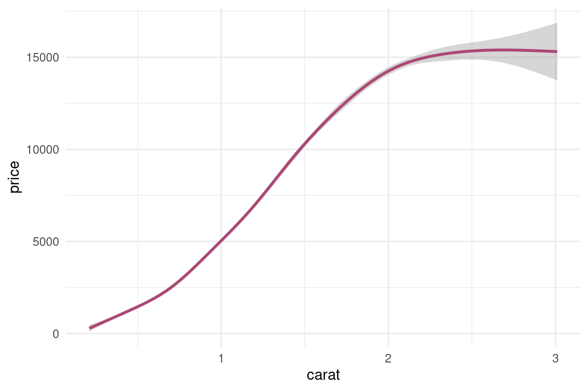
ggplot(
data = diamonds,
mapping = aes(x = carat, y = price),
) +
layer(
geom = "point",
stat = "identity",
position = "identity"
) +
layer(
geom = "smooth",
stat = "smooth",
position = "identity",
params = list(se = TRUE, colour = "#ac4875")
) +
scale_y_continuous() +
scale_x_continuous() +
coord_cartesian() +
theme_minimal()geoms
ggplot(
data = diamonds,
mapping = aes(x = carat, y = price),
) +
# layer(
# geom = "point",
# stat = "identity",
# position = "identity"
# ) +
geom_point() + # This line resumes the four ones below
layer(
geom = "smooth",
stat = "smooth",
position = "identity",
params = list(se = TRUE, colour = "#ac4875", method = "gam")
) +
scale_y_continuous() +
scale_x_continuous() +
coord_cartesian() +
theme_minimal()
ggplot(
data = diamonds,
mapping = aes(x = carat, y = price),
) +
geom_point() +
# layer(
# geom = "smooth",
# stat = "smooth",
# position = "identity",
# params = list(se = TRUE, colour = "#ac4875", method = "gam")
# ) +
geom_smooth(colour = "#ac4875") + # This line resumes the four ones below
scale_y_continuous(name = "Precio") +
scale_x_continuous(name = "Quilates") +
theme_minimal()most extended use
ggplot(diamonds) +
aes(x = carat, y = price) +
geom_point() +
stat_smooth(colour = "#ac4875") +
theme_minimal()
Facets
ggplot(diamonds) +
aes(x = carat, y = price) +
geom_point() +
stat_smooth(colour = "#ac4875") +
facet_wrap(~ color) +
theme_minimal()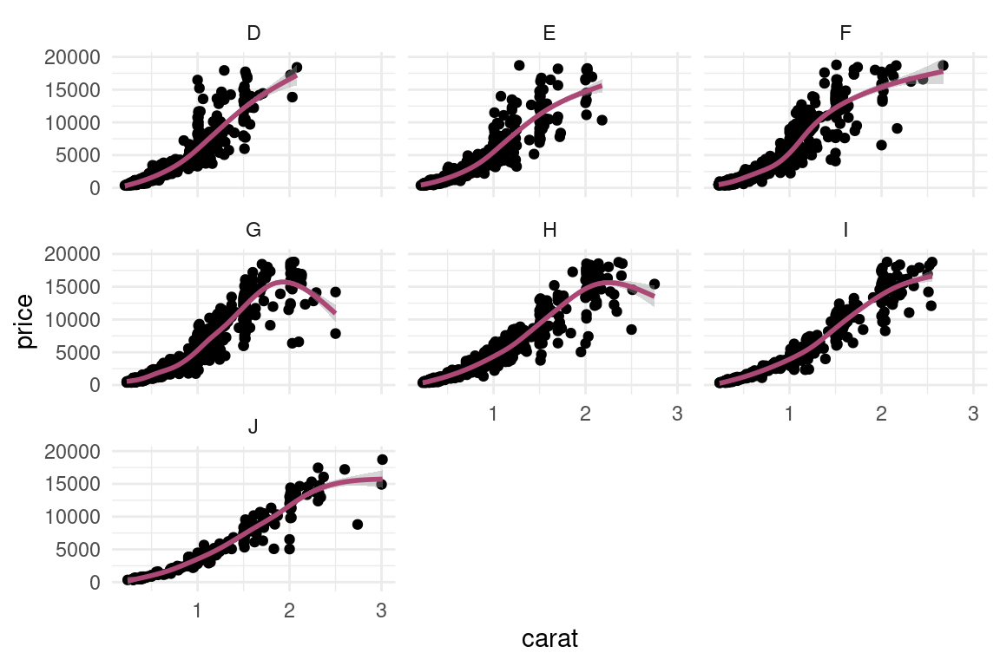
library("esquisse")
# esquisser(data = diamonds)ggplot(diamonds) +
aes(x = carat, y = price) +
geom_point(shape = "circle", size = 1.5, colour = "#112446") +
theme_minimal() +
facet_wrap(vars(color))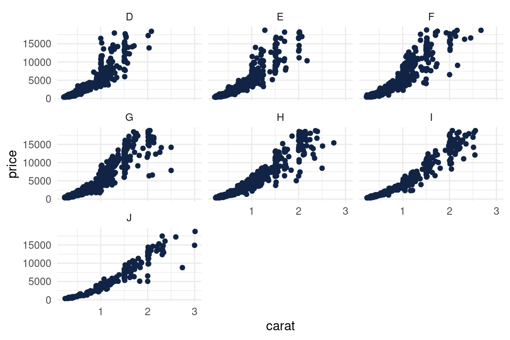
Ejemplos
ggplot(diamonds) +
aes(x = carat, y = price, colour = color) +
geom_point() ggplot(diamonds) +
aes(x = cut, y = price, fill = color) +
geom_boxplot()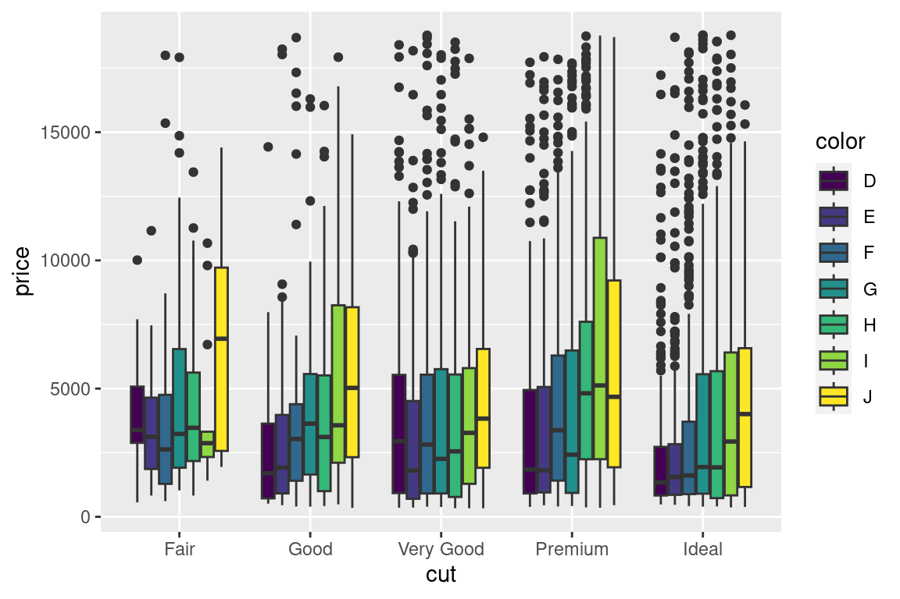
diamonds %>%
group_by(color) %>%
summarise(carat_avg = mean(carat, na.rm = TRUE)) %>%
ggplot() +
aes(x = color, y = carat_avg) +
geom_bar(stat = "identity") Ejercicio
Elabore las siguientes gráficas.
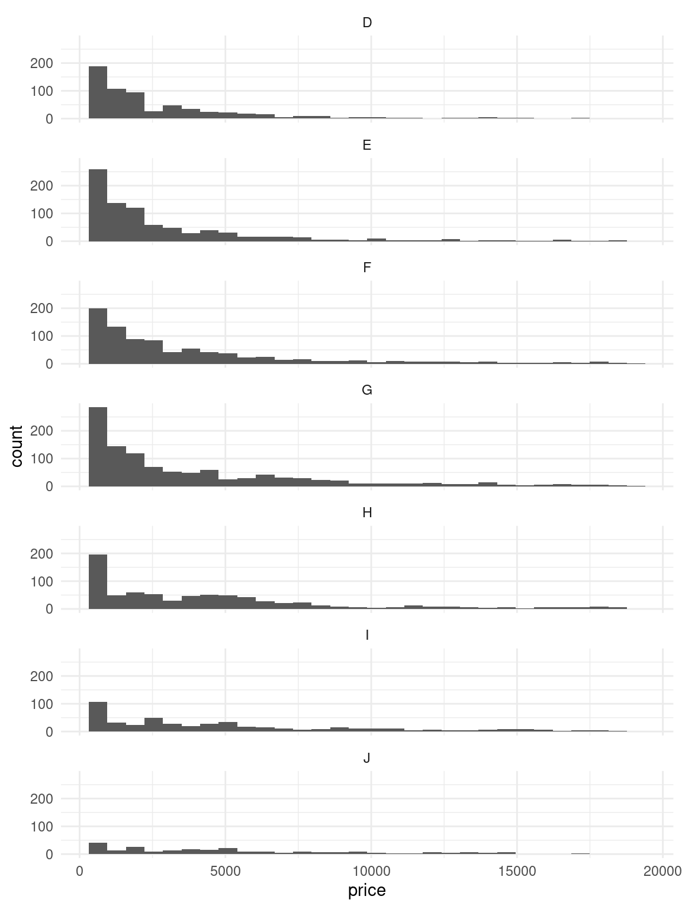
Matplotlib
Matplotlib is a versatile and robust tool for creating high-quality, customizable graphics. While it is a Python library, it can also be used in other environments like Jupyter Notebook. It is compatible with common data analysis packages such as Pandas and NumPy, and it serves as the foundation for more advanced packages used for visualization and analysis, such as Seaborn, HoloViews, Basemap, GeoPandas, and Canopy.
When using Matplotlib locally, it is recommended to install it through a Python package manager, like the well-known “pip.” You can do this by running the command “pip install matplotlib” in your terminal or command prompt, as shown in the image. If you are working in a cloud-based environment, you will also need to install the necessary packages as demonstrated.
First steps
Matplotlib is a library used for creating visualizations and graphs in Python. After installing the library, you need to import it into your working environment. It’s important to understand that Matplotlib works with two main components or “interaction zones”:
Figure: This is the top-level container that encompasses all elements, essentially acting as the “window” that holds the graph. You can find more details in the matplotlib.figure module.
Axes: Axes contain the elements of the figure and allow you to control aspects like plotting, axes, appearance, and more. Detailed information about axes can be found in the matplotlib.axes module.
Matplotlib provides three ways to use the library:
Using the pylab module: By importing the library with the command from pylab import *, you get a style similar to MATLAB. This approach is suitable for quick testing and command-line interactions, although it’s less recommended in general usage.
Using the pyplot module: This is a state-based interface for Matplotlib, also similar to MATLAB. It automates the creation of the necessary instances for drawing the graph and is recommended for both interactive and static plotting. You can find more information and a list of functions in the matplotlib.pyplot module.

Using an object-oriented interface: This is the most complex method but offers more control. It allows the generation of advanced graphics because you have greater control over the code to create instances and apply methods to them. This approach is widely recommended for non-interactive graphic generation and can be easily integrated into functions and scripts within larger projects.

Further reading
Visit the The Python Graph Gallery for inspiration.
Visit the matplotlib documentation, there are learning sources for begginers and advanced users.
Read the complete guide of Kaggle. It can be helpful.
Basics
import numpy as np
import pandas as pd
import matplotlib.pyplot as plt
import seaborn as sns
import matplotlib.colors
# diamond=sns.load_dataset("diamonds", cache=True, data_home=None).sample(500)
# You can uncomment this line to change the style of the graphs.
# plt.style.use('ggplot')
diamonds = r.diamonds # This line only works in r sessionsPlot
import matplotlib.pyplot as plt
import numpy as npx = diamonds["carat"]
y = diamonds["price"]/1000
z = diamonds["cut"]plt.plot(x, y, 'b.')
plt.show()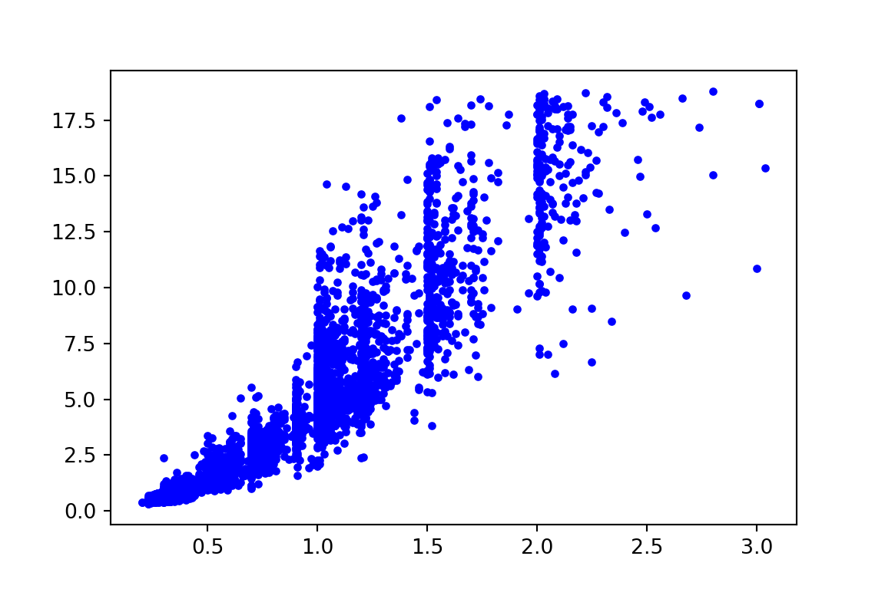
plt.close()plt.plot(x, y, 'rx')
plt.show()
plt.close()plt.plot(x, y, 'go')
plt.plot(y, x, 'go')
plt.show()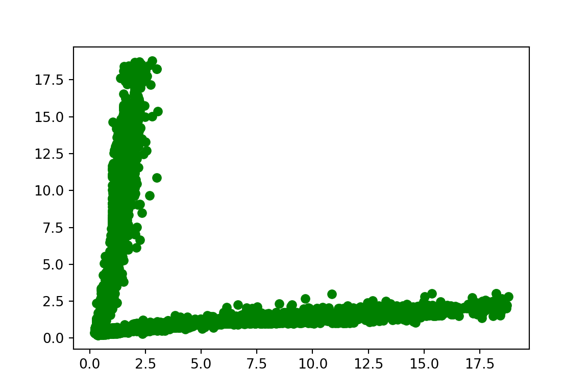
plt.close()Histograma
plt.hist(x)
plt.show()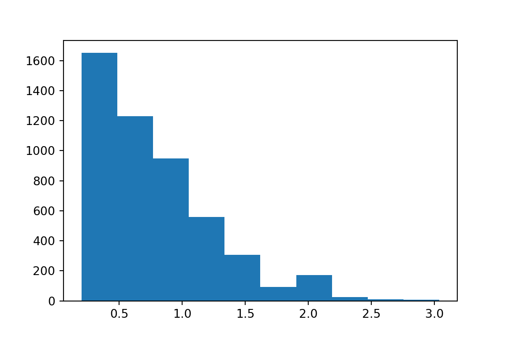
plt.close()Scatterplot
plt.scatter(x, y)
plt.show()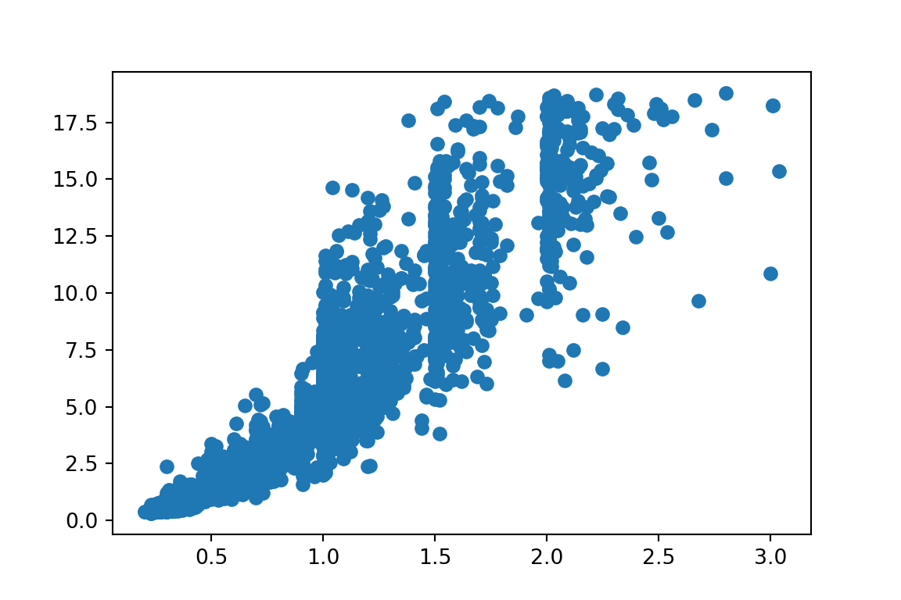
plt.close()Pie
z_count = z.value_counts()
plot_01 = plt.pie(z_count, labels=z_count.index)
plt.show()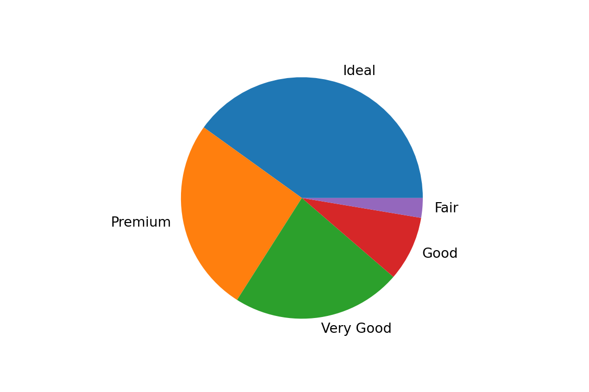
plt.close()plot_01 = plt.pie(z_count)
plt.plot(x, y, 'b.')
plt.show()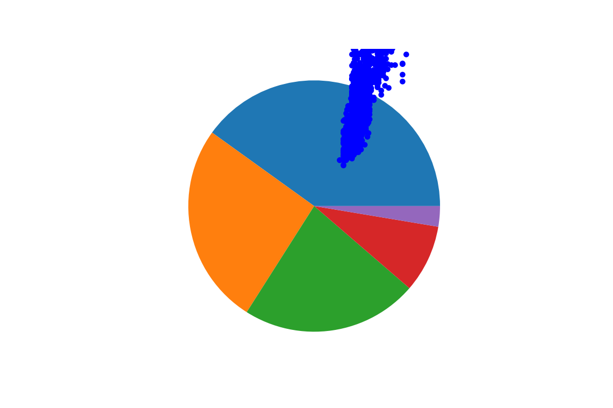
plt.close()Barplot
plt.bar(z_count.index, z_count)
plt.show()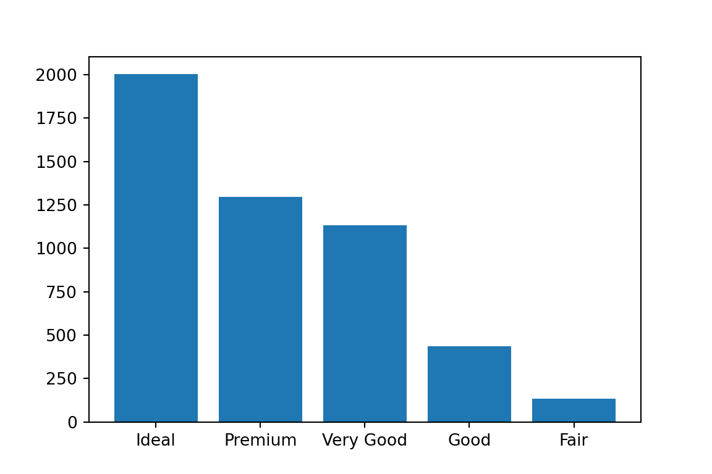
plt.close()Boxplot
plot_01 = plt.boxplot(x)
plt.show()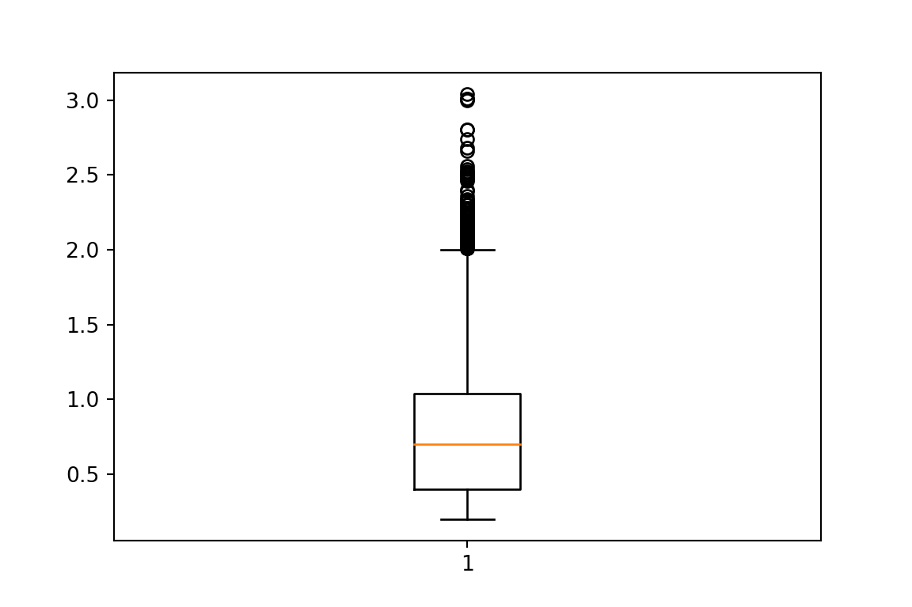
plt.close()Subplot
# subplot
# # de filas
# # de columnas
# índice
plt.subplot(1, 2, 1)
plt.plot(x, y, 'r.')
plt.subplot(1, 2, 2)
plt.hist(y)
plt.show()plt.close()Visualización orientada a objetos
fig = plt.figure()
axes = fig.add_axes([0.1, 0.1, 0.8, 0.8])
axes.plot(x, y, "b.")
plt.show()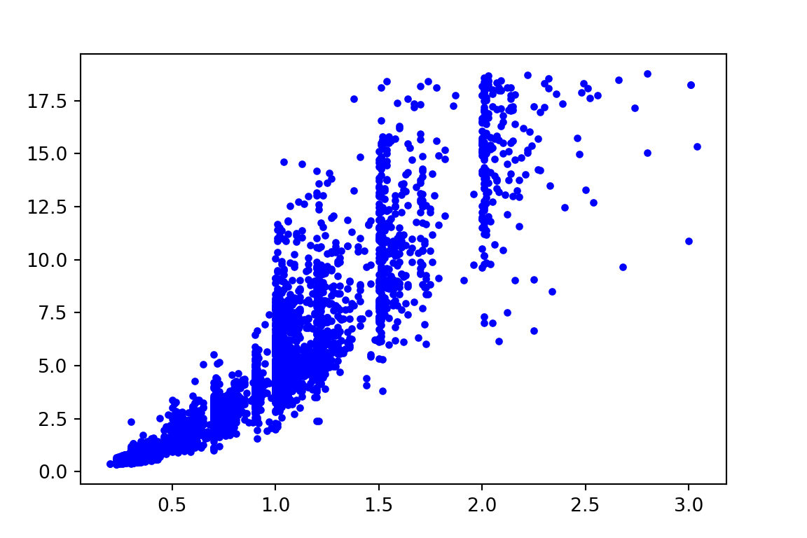
plt.close()fig = plt.figure()
axes = fig.add_axes([0.1, 0.1, 0.4, 0.5])
axes.plot(x, y, "g.")
plt.show()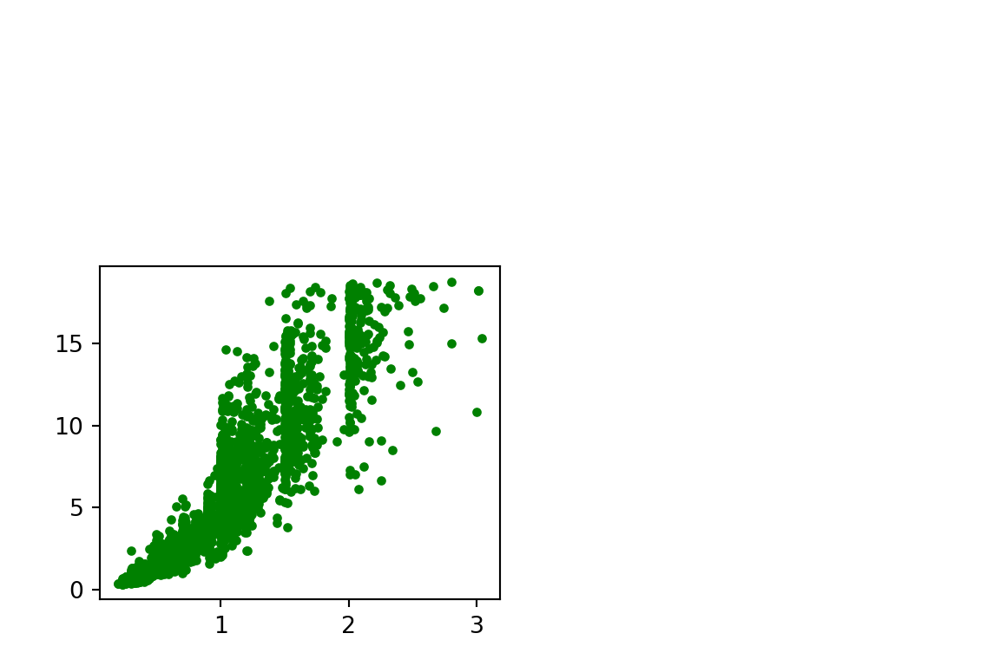
plt.close()fig = plt.figure()
axes1 = fig.add_axes([0.05, 0.05, .7, 0.7])
axes1.scatter(x, y)
axes2 = fig.add_axes([0.8, 0.05, 0.15, 0.7])
axes2.boxplot(x){‘whiskers’: [<matplotlib.lines.Line2D object at 0x7f084a597050>, <matplotlib.lines.Line2D object at 0x7f084a597a90>], ‘caps’: [<matplotlib.lines.Line2D object at 0x7f084a59c690>, <matplotlib.lines.Line2D object at 0x7f084a59d010>], ‘boxes’: [<matplotlib.lines.Line2D object at 0x7f084a595650>], ‘medians’: [<matplotlib.lines.Line2D object at 0x7f084a59db10>], ‘fliers’: [<matplotlib.lines.Line2D object at 0x7f084a59e4d0>], ‘means’: []}
axes3 = fig.add_axes([0.05, 0.8, 0.7, 0.15])
axes3.boxplot(y, vert=False){‘whiskers’: [<matplotlib.lines.Line2D object at 0x7f084a5d8e90>, <matplotlib.lines.Line2D object at 0x7f084a5d9b10>], ‘caps’: [<matplotlib.lines.Line2D object at 0x7f084a5da650>, <matplotlib.lines.Line2D object at 0x7f084a5dadd0>], ‘boxes’: [<matplotlib.lines.Line2D object at 0x7f084a526f90>], ‘medians’: [<matplotlib.lines.Line2D object at 0x7f084a5da950>], ‘fliers’: [<matplotlib.lines.Line2D object at 0x7f084a5ec310>], ‘means’: []}
plt.show()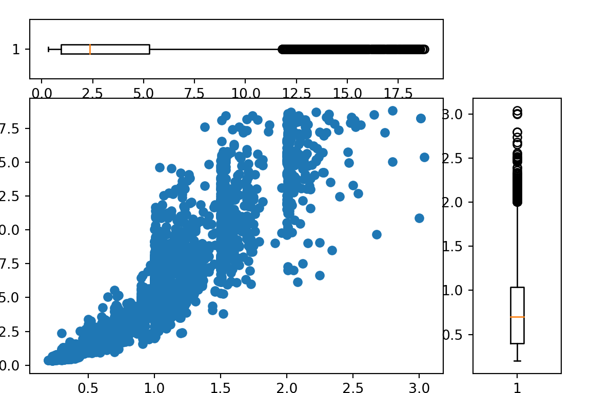
plt.close()Subplots
# fig = plt.figure()
# axes = fig.add_axes([0.1, 0.1, 0.8, 0.8])
fig, axes = plt.subplots(nrows = 1, ncols=2)
axes[0].plot(x, y, 'b.')
axes[1].plot(x, y, 'ro')
plt.show()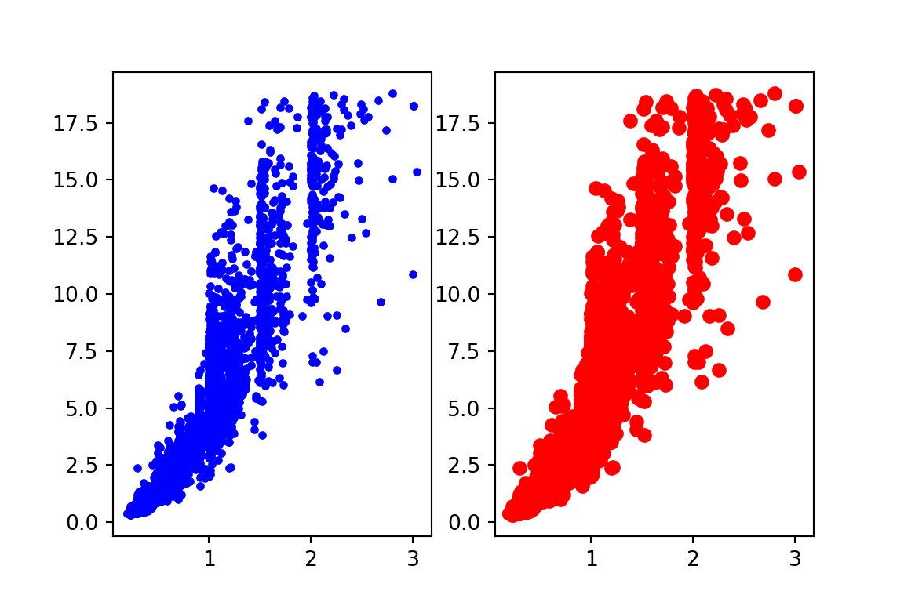
plt.close()fig, [ax1, ax2] = plt.subplots(nrows = 1, ncols=2)
ax1.plot(x, y, 'b.')
ax2.plot(x, y, 'ro')
plt.show()
plt.close()x0 = np.linspace(0, 5, 11)
y1, y2, y3, y4, y5, y6 = np.sin(x0), np.cos(x0), np.tan(x0), x0, x0**2, x0**3
fig, [[ax1, ax2, ax3], [ax4, ax5, ax6]] = plt.subplots(nrows = 2, ncols=3)
ax1.plot(x0, y1)
ax2.plot(x0, y2, 'ro')
ax3.plot(x0, y3, 'gD')
ax4.plot(x0, y4)
ax5.plot(x0, y5, 'ro')
ax6.plot(x0, y6, 'gD')
fig.tight_layout()
plt.show()plt.close()Leyendas, etiquetas, títulos, tamaño
fig, [ax1, ax2] = plt.subplots(nrows = 2, ncols=1)
ax1.plot(x0, y1, 'g', label="sen(x)")
ax1.set_title("Seno")
ax1.set_xlabel("x")
ax1.axhline()
ax1.legend()
ax2.plot(x0, y2, 'r', label="$cos(x)$")
ax2.axhline()
ax2.set_title("Coseno")
ax2.set_xlabel("x")
ax2.legend()
fig.tight_layout()
fig.set_figwidth(20)
plt.show()plt.close()plt.subplot(2, 1, 1)
plt.plot(x0, y1, 'g', label="sen(x)")
plt.title("Seno")
plt.xlabel("x")
plt.axhline()
plt.legend()
# plt.legend(bbox_to_anchor = (1.3, 0.5))
plt.subplot(2, 1, 2)
plt.plot(x0, y2, 'r', label="$cos(x)$")
plt.axhline()
plt.title("Coseno")
plt.xlabel("x")
plt.legend()
plt.tight_layout()
plt.show()plt.close()Colores y estilos.
print(plt.style.available)[‘Solarize_Light2’, ’_classic_test_patch’, ’_mpl-gallery’, ’_mpl-gallery-nogrid’, ‘bmh’, ‘classic’, ‘dark_background’, ‘fast’, ‘fivethirtyeight’, ‘ggplot’, ‘grayscale’, ‘seaborn-v0_8’, ‘seaborn-v0_8-bright’, ‘seaborn-v0_8-colorblind’, ‘seaborn-v0_8-dark’, ‘seaborn-v0_8-dark-palette’, ‘seaborn-v0_8-darkgrid’, ‘seaborn-v0_8-deep’, ‘seaborn-v0_8-muted’, ‘seaborn-v0_8-notebook’, ‘seaborn-v0_8-paper’, ‘seaborn-v0_8-pastel’, ‘seaborn-v0_8-poster’, ‘seaborn-v0_8-talk’, ‘seaborn-v0_8-ticks’, ‘seaborn-v0_8-white’, ‘seaborn-v0_8-whitegrid’, ‘tableau-colorblind10’]
plt.style.use("ggplot")
fig, [ax1, ax2] = plt.subplots(nrows = 2, ncols=1)
# ax1.plot(x, y1, color="#ff00ff", alpha = 0.1, linewidth = 10)
ax1.scatter(x0, y1, label="sen(x)", color="#ff00ff", alpha = 1, linewidth = 1, marker = "p")
ax1.set_title("Seno")
ax1.set_xlabel("x")
ax1.axhline(color= "#9999aa")
ax1.legend()
ax2.plot(x0, y2, label="$cos(x)$", color="#ff0000")
ax2.axhline(color= "#9999aa")
ax2.set_title("Coseno")
ax2.set_xlabel("x")
ax2.legend()
fig.tight_layout()
fig.set_figwidth(20)
plt.show()plt.close()Ejercicio
Elabore las siguientes gráficas.
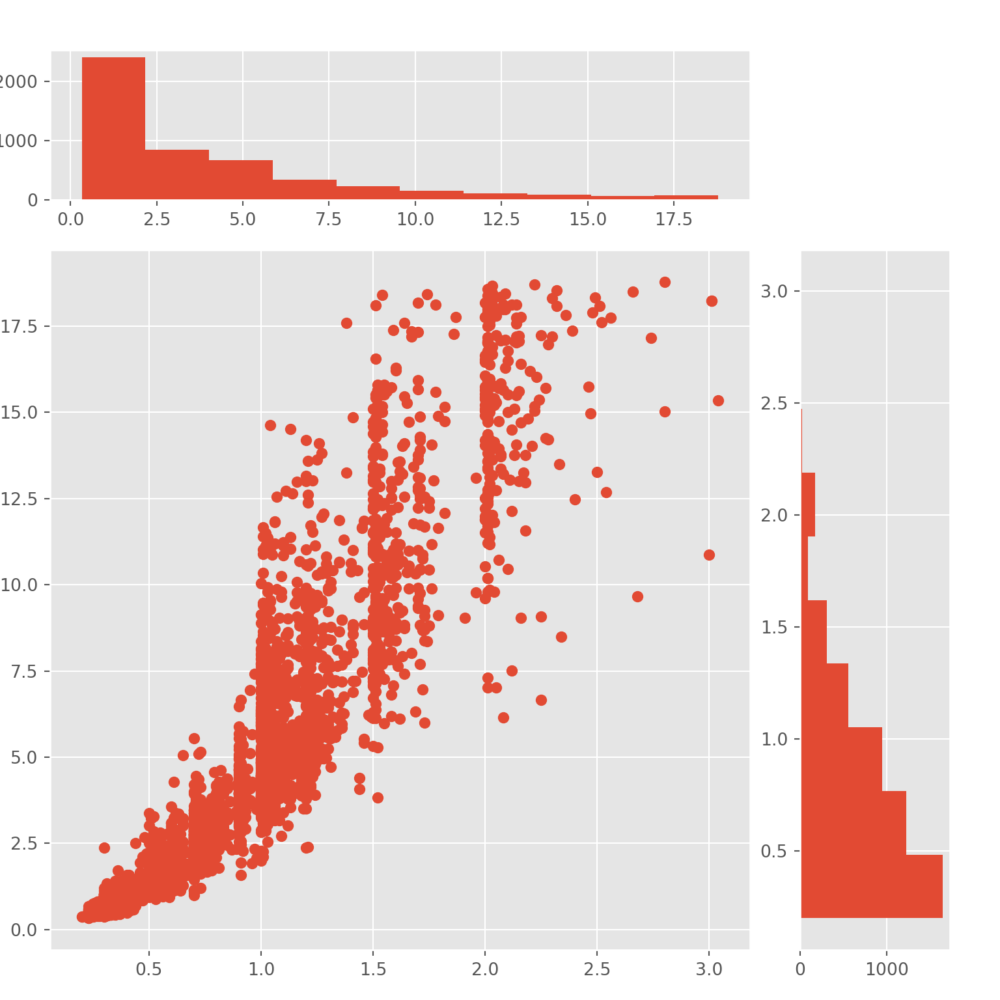
Seaborn
Seaborn is a Python library for data visualization that is built on top of Matplotlib. It’s specifically designed for creating statistical graphics and has the advantage of tight integration with the Pandas library.
Before you start creating any graphs with Seaborn, it’s important to have a good understanding of your data’s structure and to ensure that your dataset is preprocessed and ready for analysis. Seaborn offers various functions and features, including:
It is oriented towards working with Pandas dataframes, which allows you to examine relationships between multiple variables within your dataset.
Seaborn provides strong support for handling categorical variables and visualizing observations and aggregated statistics.
You can use it to visualize univariate and bivariate distributions, making it easier to understand your data’s characteristics.
It offers automatic estimation features, such as plotting linear regression models, simplifying the visualization of relationships within your data.
You can gain insights into the general structure of datasets.
Seaborn provides high-level abstractions for creating grid-like arrangements of multiple plots.
You can customize the style of your visualizations with various built-in themes.
It includes tools for selecting color palettes to make your plots visually appealing and informative.
Read the datacamp tutorial